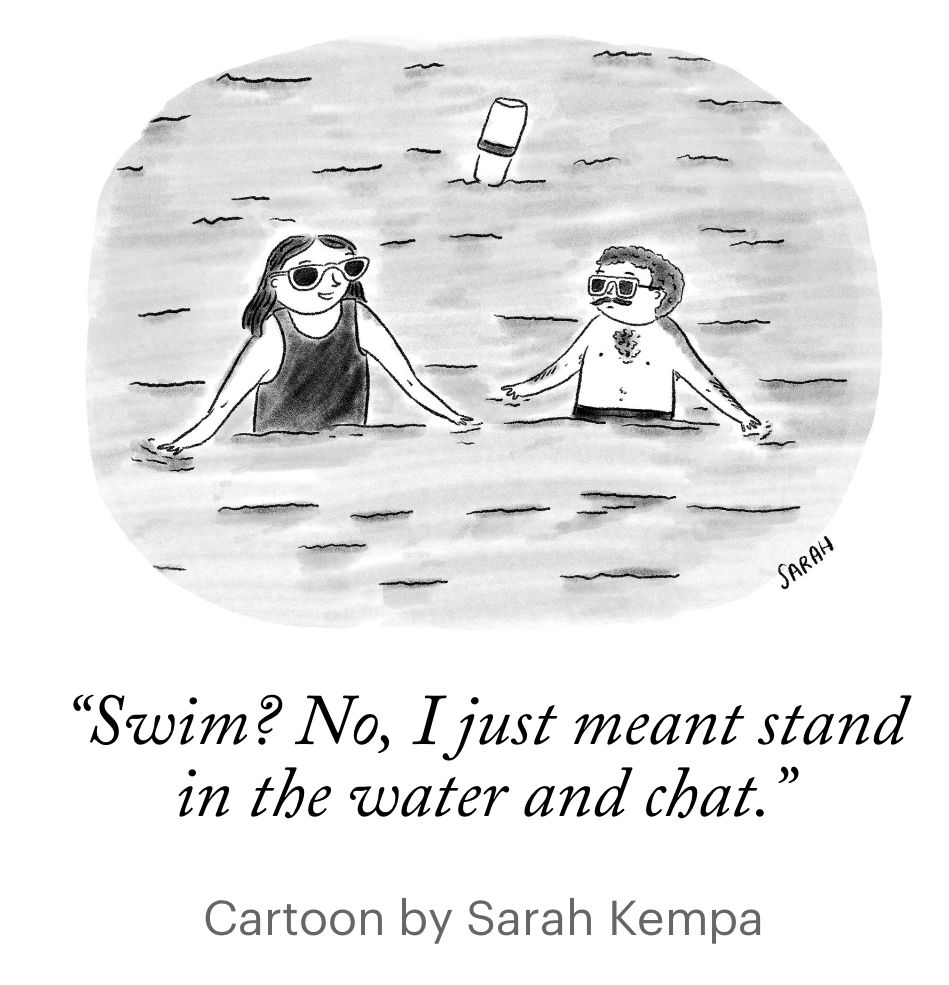
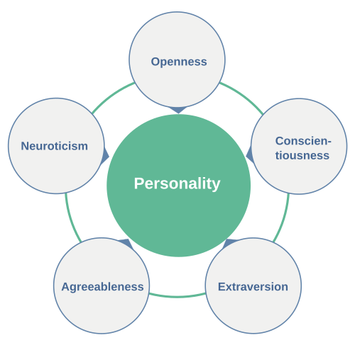

The hotel sits right on the Mediterranean. From my room I can see both: the pool, gleaming and rectangular and turquoise, populated by orderly sunloungers and a swim-up bar; and beyond it, the beach, stretching in both directions, messy and vast and indifferent to my presence.
It is 10am. I have to choose.
This, I realize, is not merely a lifestyle decision. It is a psychometric instrument and perhaps a personality test in disguise.
🤔 The Question
When both are available, equally accessible, and the weather is perfect — which do you choose? No excuses permitted. Not “the beach has jellyfish today” or “the pool is too crowded.” Conditions are controlled. The choice is pure.
Beach or pool? Your answer, I suspect, says something real about you.
⚖️ What Each Option Actually Offers
They are not the same thing with water. They are fundamentally different environments, and the differences are systematic.
The pool offers:
- Temperature you can predict before you get in
- Water you can see through to the bottom
- A defined, bounded space with legible social rules
- No waves, no salt, no sand in awkward places
- A bar at one end, a shallow end at the other, and nothing unknown
The beach offers:
- Wildness — scale, horizon, the sense of something that was here long before you and will be here long after
- Salt water: more buoyant, more sensory, more alive
- Waves — rhythmic, unpredictable, occasionally rude
- Sand, which is either a pleasure or an abomination depending on who you are
- Anonymity — you are one small person at the edge of something enormous
The pool is a controlled environment. The beach is not, and that is either its appeal or its problem.
🏖️ Beachiphilia and Its Dimensions
This brings us to a concept BS has been developing: beachiphilia — the love of the beach, and all that comes with it. Not everyone has it equally. Some people are genuine beachiphobes, who find the sand invasive, the horizon anxiety-inducing, and the absence of a controlled water temperature frankly alarming. This is a legitimate position.
Some people are drawn to the beach the way others are drawn to mountains or cities; it is a genuine dimension of personality, not just a leisure preference.
The beach-vs-pool question is a clean operationalisation of one facet of beachiphilia: tolerance for, or active preference for, the uncontrolled. The beach is bigger, wilder, saltier, sandier, and less predictable than the pool. Choosing it means choosing all of that. Choosing the pool means preferring the edited version.
But beachiphilia is not a simple binary, and neither are beaches. There are really two sets of dimensions to the beach-or-pool choice: psychological and physical.
The psychological dimension is what the rest of this post is about: openness to experience, sensation-seeking, tolerance for disorder. This is relatively stable across beaches.
🌊 Physical dimensions
The physical dimension is more contingent — and easily overlooked. Beaches vary enormously in what they actually offer, and this variation shapes the choice in ways that have nothing to do with personality:
- Sand: ultra-fine and powdery (the Caribbean ideal), coarse and gritty (bracing), sharp pebbles (character-building), or large rocks (an acquired taste).
- Water: flat and glassy, gentle ripples, proper waves, or full surf — each a different physical contract with the sea.
- Colour: luminous turquoise, deep Mediterranean blue, or grey North Sea (which requires a different kind of enthusiasm entirely)
- Amenities: a beach bar within reach, clean facilities, phone signal for those who need it.
- Getting there: a five-minute walk from your room, a thirty-minute drive to find parking, a water-taxi, an excursion boat — each adding its own cost-benefit calculation before you have even touched the water.
A true beachiphilia scale would need to account for both dimensions. Someone who says “I prefer the pool” at a North Sea resort in October may be a passionate beach person who simply found the specific beach unappealing — not a pool person at all. The measurement problem is to separate the preference for beach-in-general from the preference for this-particular-beach- today.
🐚 Tribes of the Shore: A Taxonomy of Beachiphilia

This New Yorker cartoon says it all. Two figures stand waist-deep in the ocean, engaged in what is clearly a serious conversation. The caption: Swim? No, stand in water and chat.This is not a failure to swim. It is a choice—a fully realized beach identity.
Beachiphilia, the love of beaches, is not monolithic. Spend an afternoon watching the waterline and you will notice that beachgoers sort themselves into recognizable tribes, each with a characteristic relationship to the water, the shore, and other people. The tribes are stable across cultures and generations. You probably know which one you belong to.
The Social Wader has found the optimal position: deep enough to feel the water’s cool resistance, shallow enough to stand comfortably, close enough to others to talk. The water is not the destination; it is the venue. Conversations held waist-deep in the Atlantic carry a particular intimacy—slightly absurd, slightly ceremonial, insulated from the noise of the shore. The Social Wader may remain in this position for hours.
The Swimmer is the purist. Entry into the water is purposeful; swimming is the point. The Swimmer moves parallel to the shore, counts laps between buoys, emerges satisfied. Social interaction is not unwelcome but is not the reason for being here.
The Plunger cannot abide gradual entry. The psychophysics of cold water exposure—the sharp gasp, the momentary paralysis, the sudden warmth that follows full immersion—are best handled decisively. The Plunger runs in, submerges completely, surfaces transformed. Hesitation makes it worse.
The Shore Holder has staked out territory above the tide line. Towel, chair, umbrella, book, possibly a small cooler. The Shore Holder may glance at the water occasionally, may walk to the water’s edge and back, but has no intention of entering. This is not a failure of nerve. The Shore Holder understands something the others do not: the beach is also the place next to the water.
The Drifter floats alone on their back, ears submerged, eyes on the sky. The ocean is a medium for a particular kind of solitude—the body weightless, the world muffled, the horizon visible in all directions. The Drifter is unreachable, briefly, which may be the point.
The Handler is in the water because someone else required it. To watch a child who should go no further than this depth. Keep your eye on a dog who has already gone too far. The Handler’s attention is entirely elsewhere.
These are not rigid categories. A confirmed Shore Holder may become, in the right company or the right heat, a Social Wader for an afternoon. The Plunger who swims every day in July may spend September as a Drifter. But the types are recognizable enough that beachgoers implicitly negotiate them—the Social Waders cluster together; the Swimmers give them a wide berth.
What determines which tribe you belong to? Partly thermal sensitivity—the Plunger and the Social Wader have different cold-water psychophysics. Partly sociality—the Shore Holder and the Drifter are both, in their different ways, seeking a particular quality of solitude or self-containment. Partly what the beach means to you: venue, medium, backdrop, or destination.
The cartoon captures the Social Wader’s quiet dignity. They are not failing to swim. They are doing exactly what they came to do.
🧠 The Personality Connection
If you were running this as a proper study, you could administer the Big Five personality inventory alongside the beach-vs-pool question. My predictions:

Openness to experience — the strongest predictor. Beach people score higher. The beach demands a certain willingness to be surprised, to accept sand and salt and waves on their own terms. Pool people may prefer their environment more curated.
Neuroticism / need for control — pool people may score modestly higher. Not because they are anxious, but because the pool’s predictability is genuinely appealing to people who like to know what they are getting into. Literally.
Sensation seeking — beach people higher. Waves are stimulating in a way still water is not. The beach engages more senses simultaneously: sound, smell, movement underfoot, the thermal variability of sand and water and breeze.
Extraversion — less clear. Pools have a more structured social environment; beaches are more anonymous. The relationship probably depends on what kind of socialising you are after.
Conscientiousness — possibly higher in pool people. You are less likely to leave the pool with sand in your belongings, which requires a certain tolerance for disorder.
These are priors, not findings. The study would be the update. If you’d like to find out where you are in this space, you can take a four-minute version of the Big Five
⏳ The Age and Life Stage Effect
The beach-vs-pool preference is probably not stable across a lifetime.
With young children, the pool wins almost automatically: shallower, bounded, visible bottom, no waves to knock anyone over, easier to keep track of small people. The beach is wonderful but requires a higher vigilance tax.
In middle age, the choice may reflect the personality dimensions most clearly — the signal is least contaminated by practical constraints.
In older age, a different pragmatism sets in. Salt water’s extra buoyancy becomes an asset. The pool’s steps and railings become relevant. The beach’s uneven terrain becomes either invigorating or inconvenient.
A clean study would measure beach-vs-pool preference alongside age, life stage, and personality — and fit a model that separates the personality signal from the practical constraints. The interaction between age and openness to experience would be the interesting term.
🔄 A Further Wrinkle: The Switcher
There is a third type, underrepresented in the binary framing: the person who starts at the beach and migrates to the pool by mid-afternoon, or vice versa. They are optimising across time rather than making a single choice, and their behaviour encodes something different again — perhaps higher flexibility, perhaps indecision, perhaps simply a longer planning horizon.
A full beachiphilia scale would need to capture this. Not just beach or pool but when, in what weather, with whom, for how long, and in what order.
The measurement problem is, as always, more interesting than it first appears.
🔬 How Would You Study It?
The cleanest design: a hotel on the beach, a pool, and a willing sample of guests. On arrival, administer the Big Five and a short beachiphilia questionnaire. Over the course of the stay, observe (or ask about) daily choices: beach, pool, or both. Record time of day, weather, who they are travelling with, and age.
The outcome variable is not a single choice but a pattern across days — a proportion, or a trajectory. Some people are consistent; some switch. The variance in switching behavior is itself informative.
Analysis:
- Model: multilevel logistic regression, with daily choice nested within-person.
- Predictors: Big Five scores, age, party composition (solo, couple, family), weather.
- The random effects structure would show how much of the variance is stable personality versus day-to-day circumstance.
The field site is pleasant. The data collection involves sitting by either a pool or a beach. Ethics approval should be straightforward.
I chose the beach. I always choose the beach. This may itself be a data point, though I am not sure it is a surprising one. Only the beach encourages BS.